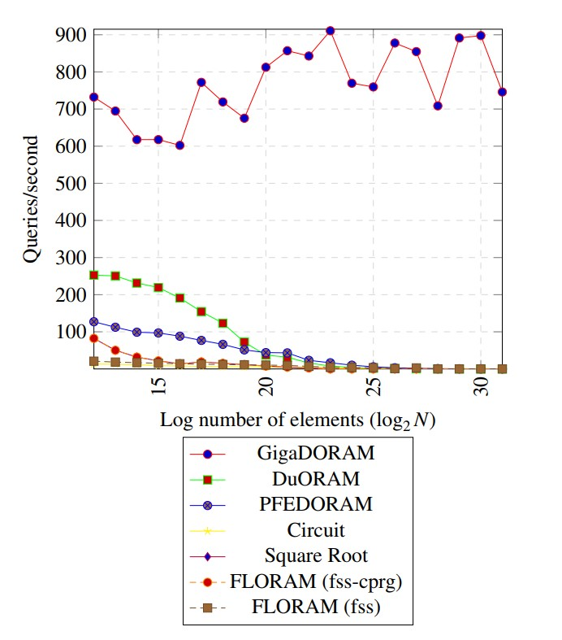

Matan Shtepel
CV

Howdy! I am an undergraduate at UCLA studying computer science and
mathematics.
I am fortunate to be advised by Prof. Rafail Ostrovsky (UCLA)
and Prof. Brett Falk (UPenn), researching
Secure Multi-Party Computation, Oblivious RAM (ORAM), and cryptography at large.
In particular, we are working on advancing the theory and practice of Distributed ORAM (DORAM), planning to submit papers to Crypto23' and have submitted a paper to USENIX23' in February.
Recently, I applied for PhD programs in cryptography, theoretical computer science, and blockchain, all of which I am broadly interested in.
You can find my CV here.
Along with my research activities, I advocate for (ex) community college students in research, organize The UCLA TCS Guild (winter23' theme: Lattices!), and consult(ed) blockchain startups Nexus and Holonym.
Outside of academia and building subpar academic websites, I enjoy collaborating on
various software
projects, reading (now: Quantum Computing since Democritus & HPMOR), goofing-around with
fashion, running decently often, surfing badly, mediocrely snowboarding, taking interest in rationality, and spending an
unhealthy amount of time on looking at mathematician and scientists' bios on Wikipedia.
"It is by logic that we prove, but by intuition that we discover." (J. Henri Poincaré)
Publications
- Mark Burgin, Matan Shtepel "On Totalization of Computable Functions in a Distributive Environment", accepted to the International Journal of Parallel, Emergent and Distributed Systems (GPAA). Once published online, will be available here.
Submitted (added just for PhD apps)
-
GigaDORAM: Breaking the Billion Address Barrier
We design and implement GigaDORAM, a novel 3-server Distributed Oblivious RAM (DORAM) protocol. GigaDORAM features poly-logarithmic computation and communication which is comparable to that of other hierarchical based (D)ORAMs, but with an 100x reduction in rounds per query. At N= 2^{19}, 2^{25}, 2^{31} we achieve over 10x, 160x, 2500x improvement to queries/sec over state-of-the-art, respectively. When N = 2^{31}, our DORAM is able to perform over 700 queries per second while previous constructions could not handle even a single query per second (see Figure 1). Pre-eprint version is avalabile a here.
B. Falk, R. Ostrovsky, M. Shtepel, J. Zhang
Submitted USENIX23 (February deadline)
 Figure 1: GigaDORAM performance compared to previous DORAM constructions. All benchmarked on comparable machines connected via comparable networks. For more information, see Section 10 pre-Eprint version.
In-Writing (added just for PhD apps)
-
DORAM revisited: Maliciously secure RAM-MPC with logarithmic overhead
We give the first malicious construction of Distributed ORAM while matching the asymptotics of the best-known semi-honest constructions. As a corollary we give the first maliciously-secure MPC with logarithmic-overhead random access. We show generic techniques (ORAM + MPC + GMW Compiler) are not sufficient for obtaining these results.
B. Falk, D. Noble, R. Ostrovsky, M. Shtepel, J. Zhang
Intend to submit to TCC/Asiacrypt -
MGigaDORAM: Practical Maliciously-Secure DORAM & RAM-MPC
We give MGigaDORAM, the first implemented maliciously secure DORAM. Although its stricter security model, MGigaDORAM is only 4x (currently estimated) slower then most efficient semi-honest DORAM (GigaDORAM). Leveraging MGigaDORAM, we extend the replicated MPC of Lindell et al ([CGHI]) to a RAM-MPC. We show that our RAM-MPC is over 100x faster than previous implementations (which were all semi-honest). We make our implementation open-source and integrate it to Xiao Wang’s EMP-toolkit, allowing non-expert users of the framework to execute MPC computations in the RAM model.
B. Falk, S. Kelman, R. Ostrovsky, M. Shtepel, J. Zhang
Intend to submit to CCS23 (May) -
(2^n,2^n-1) poly-logarithmic maliciously-secure RAM-MPC
We construct a (2,1) maliciously secure DORAM with logarithmic computation and communication complexity, matching the asymptotics of the best-known semi-honest constructions. Via player composition we show how to construct (2^n,2^n-1) poly-logarithmic maliciously-secure RAM-MPC.
B. Falk, R. Ostrovsky, M. Shtepel, J. Zhang
Intended submission not yet known.
Conatct Me!
If you are considering contacting me, please, do not hesitate! I am happy to receive any and all questions, offers, suggestions and vegan steak recipes (but please, nothing more 😉). {first}.{last} at g.ucla.edu
Selected Photos
Research partner Jacob Zhang wearing the cryptography shirt I made for him in front of the whiteboard we hung in our room!
Can you recognize the poster above my bed?
Yah? That construction on the board behind me? We found a flaw in the proof about 3 hours later 😎

Celebrating Kylee's Birthday

Wearing my favorite paradox

After a relaxing surf
At the Josh tree park
“Remember, all I’m offering is the truth. Nothing more."
As you may find me on a regular afternoon...